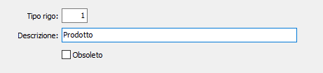
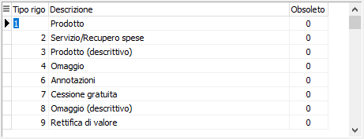

La tabella consente di memorizzare le tipologie di rigo utilizzabili nei documenti. La tabella viene comunque precaricata in sede di installazione procedura.
 Finestra di input in formato dettaglio |
 Finestra di input in formato tabella |
TIPO RIGO: codice numerico, corrispondente al tipo rigo che sarà presente sui documenti. Sul campo sono attive funzioni di ricerca sulla tabella stessa.
DESCRIZIONE: campo alfanumerico di 30 caratteri per contenere la descrizione del tipo rigo in esame.